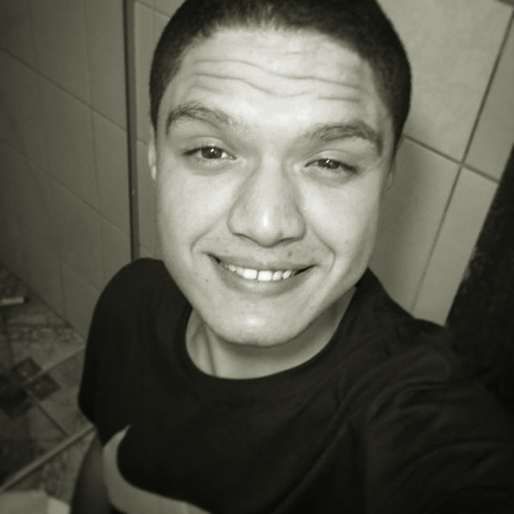

Seja bem vindo!
Um pouco da minha história ...
Olá, tudo bem? meu nome é Matheus Gonçalves, tenho 19 anos, sou estudante de Sistemas de Informação na faculdade JK no período noturno.
Escolhi esse curso pelo fato de desde criança gostar de tecnologia, ficar horas e horas no computador e sempre buscar aprender
a mexer na ferramente que eu não tinha conhecimento. Ganhei meu primeiro PC em 2009, era da marca Intelbras e tinha Windows Vista instalado,
a internet do momento era a claro 3G que por sinal não havia sinal, jogava muito e jogo até hoje o Conter-Strike que era muito famoso nas lan-houses, hoje em dia sua versão csgo
muito famoso no mundo inteiro.
Minha vida nos estudos ...
Se for fazer as contas já estudei mais ou menos uns 14 anos, muito tempo não? Sempre estudei em escola pública, exceto a faculdade, pelo que estou lembrado. Comecei estudando no 210 aqui bem perto de casa, naquela época era resumido em muitas brincadeiras e passeios. Logo depois estudei no 308 onde fiz da 1º a 4º série, era uma escola um pouco perigosa mais bem divertida, lá fiz o pequeno curso do Proerd que incentivava o não contra as drogas. Depois dessa escola fui para o 209 onde conclui meu ensino fundamental, nessa escola era um pouco diferente, mais rígido, com regras e com espaço menor. O ensino médio eu fiz no 310, tinha uma grande vantagem pois era muito perto de casa, isso facilitou bastante.

Expectativas futuras ...
Para um futuro próximo, eu espero concluir o ensino superior na área de tecnologia da informação podendo adquirir bastante experiencia através de estágios relacionados com a área e coninuar estudando para poder um dia ser uma pessoa concursada.
Design e Desenvolvimento por Matheus Gonçalves || © 2017